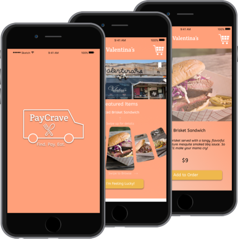

Greetings!
I'm Aaron Chen
A digital UX/UI designer who loves photography, video production, Star Wars and sea otters.
-
About
Me. Aaron Chen. What does that mean? Who am I as a person?
I am a Star Wars geek. Growing up, I read almost every single Expanded Universe novel in the Star Wars collection. I both hate and love Disney for making new Star Wars films and destroying my childhood by saying the EU isn’t canon anymore.
I am slightly obsessed with sea otters. I think this started when I saw a video of them holding hands at the Vancouver Aquarium back in high school.
I am a photographer. I am a videographer. I am a filmmaker. My camera has been my constant companion for over 8 years now. Recently I’ve been diving into old school film, and really enjoying it.
I am a dancer. I started taking community classes from my college’s hip-hop dance crew while I was in college. A year later, I joined the team. I’ve been dancing ever since.
I am a lover of the arts. Going to museums and galleries is one of my favorite activities to do as an adult.
I am a designer. Putting together visually appealing and user friendly digital work has become both an engaging mental challenge and an appealing visual everyday stimulation that I’ve come to love.
I am a creative. -

-

KODACHROME NC
BB-8 Travels
#FilmsNotDead
-
Work
I have always been drawn to creative pursuits, so design was a natural evolution of my creative journey.
I graduated from NCSU with a degree in Communication Media, with a very heavy focus on digital video and film production. I have always loved being behind the camera, to visually tell a compelling story. Being in North Carolina at the time, work was few and far between, I had to turn to retail management to get by.
Fast forward a few years, and I continued to be creative even within my retail roles, doing photo shoots for Urban Outfitters for their local social media channels. It just wasn’t enough. I needed to jump back into something creative full time as a career. I was living in San Jose and had lots of friends in tech. They suggested looking into a bootcamp to see if I liked design work. That led me to Bloc, an amazing UI/UX bootcamp, which led me to where I am currently: doing incredibly creative work, and loving every second of it. - 
-

-